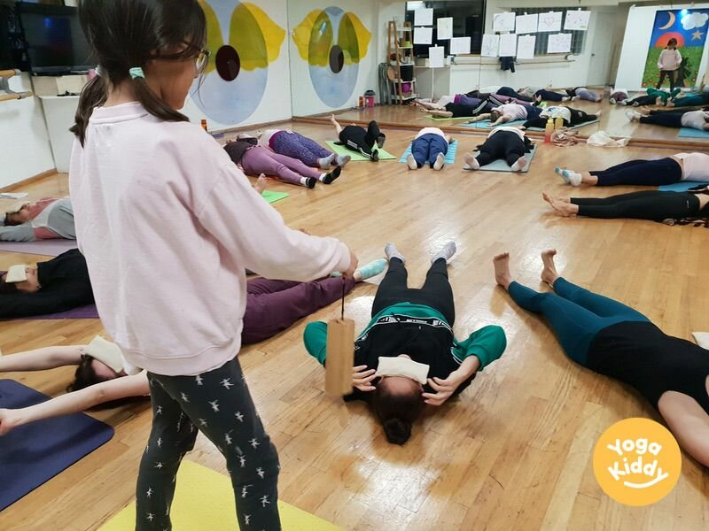

Los instrumentos de Koshi pueden ser una gran herramienta a utilizar durante yoga para niños porque tienen varias ventajas que sean particularmente bien adaptadas para este uso.
En primer lugar, el sonido calmante de las campanas puede ayudar a crear un ambiente pacífico y calmante que sea ideal para la práctica del yoga. El sonido también puede ayudar a centrar la mente y promover la relajación, que es importante para los niños que pueden tener dificultades para sentarse quieto o concentrarse durante largos períodos de tiempo.
En segundo lugar, los instrumentos Koshi están fabricados con materiales naturales, lo que puede crear una conexión con la naturaleza y una sensación de tranquilidad. Esto puede ser especialmente beneficioso para los niños, ya que puede ayudar a fomentar un sentido de respeto y reverencia por el mundo natural.
En tercer lugar, el uso de instrumentos Koshi puede ayudar a que la práctica del yoga sea más interactiva y atractiva para los niños. Las campanillas pueden utilizarse para marcar el comienzo y el final de las distintas posturas de yoga, o para señalar cuándo es el momento de pasar a la siguiente postura. Además, se puede animar a los niños a que experimenten con distintas formas de golpear las campanillas, como utilizar distintas partes de la mano o el mazo, lo que puede ayudar a desarrollar la motricidad fina y la creatividad.
Por último, el uso de instrumentos Koshi también puede ayudar a los niños a desarrollar el sentido del ritmo, lo que puede ser beneficioso para su bienestar general.
En general, los instrumentos Koshi pueden ser una herramienta valiosa para los profesores de yoga que trabajan con niños, ya que pueden ayudar a crear un ambiente tranquilo y atractivo que es muy adecuado para la práctica del yoga.